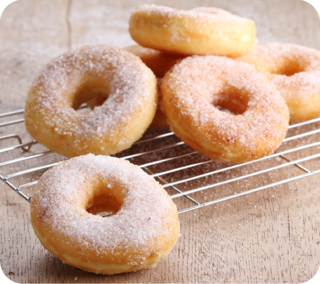

Ring Donuts

Description
Craving something sweet and baked? This ring donut recipe will be the yummiest treat you've eaten this year.
Ingredients
- 250g strong white bread flour, plus extra for dusting
- 30g caster sugar
- 7g sachet fast-action dried yeast
- 100ml lukewarm milk
- 1 egg, beaten
- 1/2 tsp vanilla extract
- 50g butter, softened
- Vegetable oil, for deep-frying